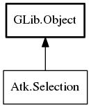

Atk.Selection – atk Reference Manual
Packages
atk
Atk
Selection
add_selection
clear_selection
get_selection_count
is_child_selected
ref_selection
remove_selection
select_all_selection
selection_changed
Selection
Object Hierarchy:

Description:
public
interface
Selection
:
Object
All known implementing classes:
CheckMenuItemAccessible
ComboBoxAccessible
FlowBoxAccessible
IconViewAccessible
ListBoxAccessible
MenuAccessible
MenuItemAccessible
MenuShellAccessible
NoOpObject
NotebookAccessible
RadioMenuItemAccessible
TreeViewAccessible
Namespace:
Atk
Package:
atk
Content:
Methods:
public
abstract
bool
add_selection
(
int
i)
public
abstract
bool
clear_selection
()
public
abstract
int
get_selection_count
()
public
abstract
bool
is_child_selected
(
int
i)
public
abstract
Object
?
ref_selection
(
int
i)
public
abstract
bool
remove_selection
(
int
i)
public
abstract
bool
select_all_selection
()
Signals:
public
virtual
signal
void
selection_changed
()
Inherited Members:
All known members inherited from class GLib.Object
@new
newv
new_valist
get_type
get_class
@ref
unref
ref_sink
weak_ref
weak_unref
add_weak_pointer
remove_weak_pointer
@get
@set
get_property
set_property
get_data
set_data
set_data_full
steal_data
get_qdata
set_qdata
set_qdata_full
steal_qdata
freeze_notify
thaw_notify
dispose
constructed
notify_property
connect
disconnect
add_toggle_ref
remove_toggle_ref
bind_property
notify
ref_count